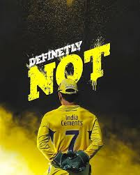

|  |
|
||||||||||||||||
|---|---|---|---|---|---|---|---|---|---|---|---|---|---|---|---|---|---|
Mahendra Singh Dhoni (born 7 July 1981) is an Indian professional cricketer. He is a right handed batter and a wicket-keeper. Widely regarded as one of the most prolific wicket-keeper-batsmen and captains, he represented the Indian cricket team and was the captain cool captain of the side in limited-overs formats from 2007 to 2017 and in test cricket from 2008 to 2014. Dhoni has captained the most international matches and is the most successful Indian captain. He has led India to victory in the 2011 Cricket World Cup, the 2007 ICC World Twenty20 and the 2013 ICC Champions Trophy, the only captain to win three different limited overs tournaments. He also led the teams that won the Asia Cup in 2010, 2016 and was a member of the title winning squad in 2018.
roses are red,b
violets are blue,
blah,blah,blah
console.log("hi"); public static void main(String args[]){System.out.println("hi");}